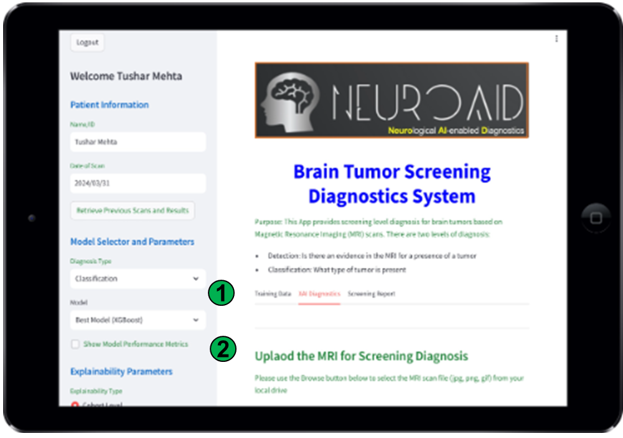
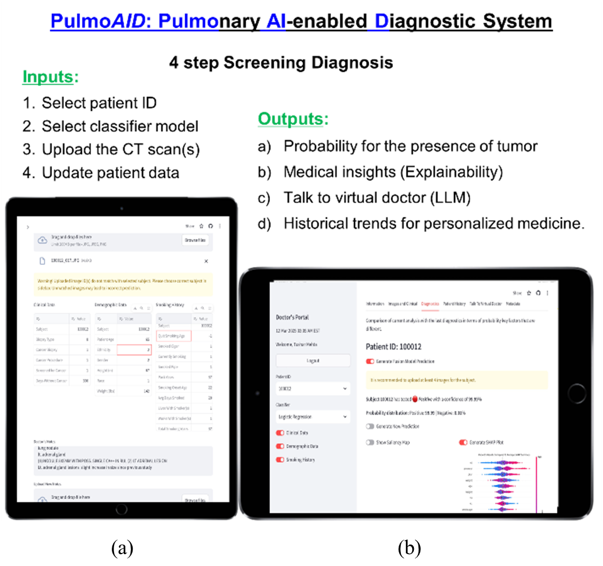
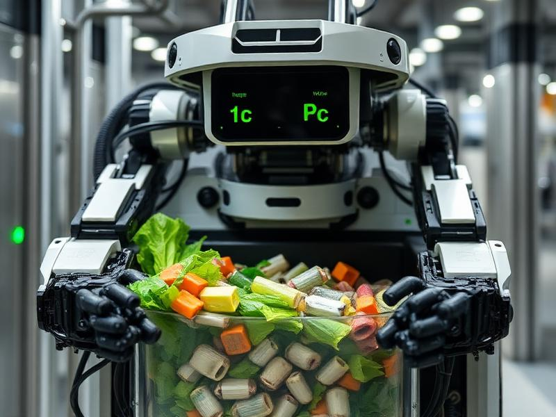
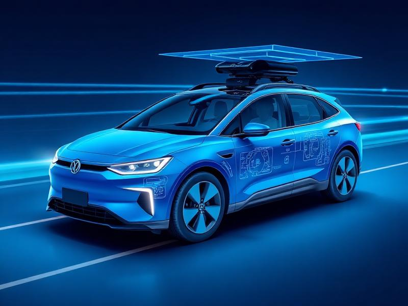

Scientific Research

NeuroAID – Brain Tumor Detection
Explainable AI system for automated brain tumor detection and classification using MRI data, deployed as a global screening web app.

PulmoAID – Multimodal Lung Cancer Diagnostics
Developed a novel multimodal deep learning algorithm integrating CT imaging with demographic and clinical data to enhance lung cancer detection. Built a global web application for real-world screening.

RecycleBot – Automated Waste Detection
CNN image classifier that distinguishes recyclable from organic waste; shipped as a web app and published in a peer-reviewed journal.

Air Quality NowCasting
Advanced machine learning system for real-time air quality prediction and environmental monitoring.

Sensor Fusion for Autonomous Vehicles
Deep reinforcement learning for optimal sensor selection and fusion across Cameras, LiDAR, and Radar.
NASA Exoplanet Transit Processing
Ground-based light-curve follow-up and validation of a TESS Object of Interest (TOI-5516.01) using GMU's 0.8 m telescope; reduction and analysis in AstroImageJ.

Traffic Congestion Monitoring with Privacy
Innovative system for monitoring traffic patterns while preserving individual privacy through advanced computational techniques.
History Research
Elizabeth Blackwell: Women's Role in Medicine
Historical analysis examining the pioneering contributions of Elizabeth Blackwell and the broader evolution of women's participation in medical sciences.
PARC v. Pennsylvania Case & Dual Fight for Rights
Legal and historical analysis of the landmark PARC v. Pennsylvania case and its dual significance in advancing both disability rights and educational access.
Gandhi: Servant of the Nation
Comprehensive study of Mahatma Gandhi's philosophy, leadership, and lasting impact on India's independence movement and global civil rights.